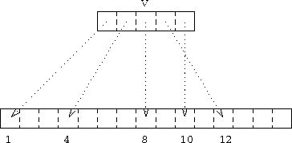

Index indirection can be introduced by using vector-valued subscripts. A one dimensional vector can be used to subscript an array in a dimension. The result of this is that an array section can be specified where the order of the elements do not follow a linear pattern. Consider:
INTEGER, DIMENSION(5) :: V=(/1,4,8,12,10/)
INTEGER, DIMENSION(3) :: W=(/1,2,2/)
then A(V) is shorthand for the irregular section that contains
A(1), A(4), A(8), A(12), and A(10) in that
order.

Figure 6: Subscripting Using a Vector
The following statement is a valid assignment to a 5 element section:
A(V) = 3.5
Likewise, if A contains the elements (5.3,6.4,..) then
C(1:3,1) = A(W)would set the subsection C(1:3,1) to (5.3,6.4,6.4).
Vector-valued subscripts can be used on either side of the assignment operator, however, in order to preserve the integrity of parallel array operations it would be invalid to assign values to A(W) because A(2) would be assigned to twice. It must be ensured that subscripts on the LHS of the assignment operator are unique.
It is only possible to use one dimensional arrays as vector subscripts, if a 2D section is to be defined then two 1D vectors must be used, for example,
A(1) = SUM(C(V,W))
Note, vector subscripting is very inefficient and should not be used unless absolutely necessary.
Now try this question